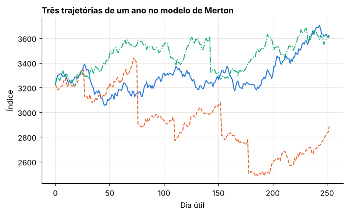
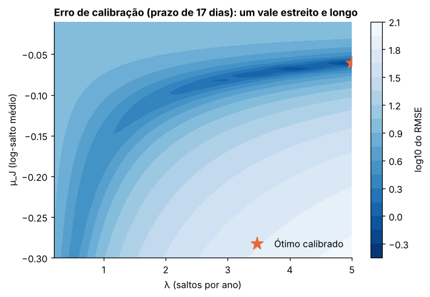
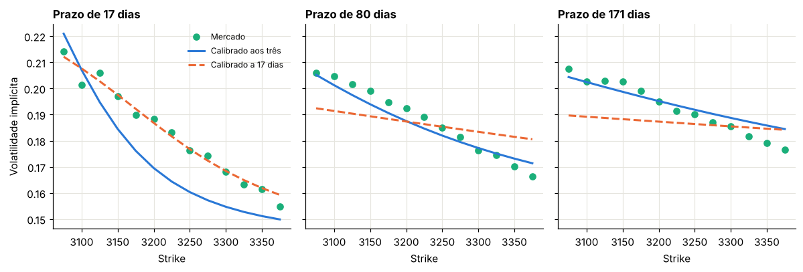

Módulo 10 — Primeiro exemplo completo: avaliação baseada em mercado com Merton#
Curso: Derivativos com Python, a partir de Derivatives Analytics with Python (Y. Hilpisch, Wiley, 2015). Este módulo cobre: capítulo 8 do livro.
O que você vai conseguir fazer ao final#
Escrever o modelo de Merton e interpretar cada parâmetro.
Deduzir a fórmula fechada em série de Poisson, prometida no Módulo 1.
Precificar por três métodos e diagnosticar quando um deles está errado.
Calibrar o modelo a uma superfície de preços, combinando busca global e local.
Reconhecer quando a calibração está mal posta.
Simular o modelo calibrado sem viés de discretização.
Usar o modelo calibrado para precificar um exótico e medir o risco de modelo.
O plano#
É o processo de seis etapas do Módulo 1, agora com as ferramentas completas:
Etapa |
Aqui |
|---|---|
Mercado |
superfície sintética no estilo do EURO STOXX 50 |
Modelo |
Merton (1976) |
Vanilla |
Lewis, FFT e série |
Calibração |
força bruta + mínimos quadrados |
Simulação |
esquema exato |
Exótico |
barreira, comparando modelos |
Sobre os dados. O livro usa cotações do EURO STOXX 50 de 30/09/2014, distribuídas na plataforma do autor. Aqui geramos um mercado com o mesmo nível de índice, os mesmos prazos e a mesma faixa de strikes, mas a partir de um modelo mais rico que o de Merton: volatilidade estocástica com saltos. Assim reproduzimos a situação do livro, em que o modelo calibrado não é o verdadeiro, com a vantagem de conhecer a verdade.
0. Preparação#
from time import perf_counter
import numpy as np
import pandas as pd
import matplotlib.pyplot as plt
from scipy.integrate import quad, simpson
from scipy.optimize import brentq, brute, least_squares
from scipy.stats import norm, poisson
from IPython.display import display
AZUL, LARANJA, VERDE, CINZA = "#2a78d6", "#eb6834", "#1baf7a", "#8a8a84"
plt.rcParams.update({
"figure.figsize": (7.2, 4.0), "figure.dpi": 110,
"axes.spines.top": False, "axes.spines.right": False,
"axes.grid": True, "grid.color": "#e6e5df", "grid.linewidth": 0.8,
"axes.axisbelow": True, "axes.titlesize": 11, "axes.titleweight": "bold",
"axes.titlelocation": "left", "lines.linewidth": 2.0, "legend.frameon": False,
"font.size": 10,
})
def f3(x):
"""Formata com três casas decimais no padrão brasileiro."""
return f"{x:,.3f}".replace(",", "§").replace(".", ",").replace("§", ".")
def tabela(df):
"""Exibe um DataFrame com os números reais em três casas decimais."""
def fmt(v):
if isinstance(v, (float, np.floating)):
return "n/d" if np.isnan(v) else f3(v)
return v
display(df.map(fmt))
_checks = {"n": 0}
def ok(condicao, mensagem):
"""Verificação do laboratório: interrompe o notebook se a conta não fechar."""
assert bool(condicao), f"FALHOU: {mensagem}"
_checks["n"] += 1
print(f"OK — {mensagem}")
def bsm(S, K, T, r, sig, tipo="call"):
d1 = (np.log(S / K) + (r + 0.5 * sig**2) * T) / (sig * np.sqrt(T))
d2 = d1 - sig * np.sqrt(T)
if tipo == "call":
return S * norm.cdf(d1) - K * np.exp(-r * T) * norm.cdf(d2)
return K * np.exp(-r * T) * norm.cdf(-d2) - S * norm.cdf(-d1)
def vol_impl(preco, S, K, T, r):
piso = max(S - K * np.exp(-r * T), 0.0)
if not (piso + 1e-10 < preco < S):
return np.nan
return brentq(lambda s: float(bsm(S, K, T, r, s)) - preco, 1e-4, 4.0)
S0, R = 3225.93, 0.005
print("Ambiente pronto.")
Ambiente pronto.
1. O modelo#
Livro: §8.2
Sob \(Q\), o índice segue
em que \(N_t\) é um processo de Poisson de intensidade \(\lambda\) e cada log-salto é \(J \sim N(\mu_J, \delta^2)\), independente de tudo. O termo \(r_J\) compensa o crescimento médio dos saltos (Módulo 4):
Parâmetro |
Significado |
Efeito na superfície |
|---|---|---|
\(\sigma\) |
volatilidade da parte contínua |
nível |
\(\lambda\) |
saltos por ano, em média |
intensidade do skew e das caudas |
\(\mu_J\) |
log-salto médio |
direção do skew; negativo para índices |
\(\delta\) |
dispersão dos saltos |
curvatura do sorriso |
Errata do livro. A §8.2 especifica \(\ln(1+J_t) \sim N\big(\ln(1+\mu_J) - \tfrac12\delta^2, \delta^2\big)\). Com essa lei, o salto relativo médio seria \(\mu_J\) e a compensação seria \(r_J = \lambda\mu_J\). Mas a fórmula de \(r_J\) que o livro usa, a função característica (8.2) e os scripts correspondem a \(\ln(1+J) \sim N(\mu_J, \delta^2)\), que é a lei adotada aqui.
Laboratório 1.1 — Como é uma trajetória#
Simulamos com os parâmetros do script de simulação do livro, que vêm da calibração ao prazo mais curto: \(\sigma = 0{,}113\), \(\lambda = 3{,}559\), \(\mu_J = -0{,}075\), \(\delta = 0{,}041\).
LIVRO = dict(sig=0.113, lam=3.559, mu=-0.075, delta=0.041)
def r_j(lam, mu, delta):
return lam * (np.exp(mu + 0.5 * delta**2) - 1)
rng = np.random.default_rng(1001)
dias = 252
dt = 1 / dias
fig, ax = plt.subplots()
for cor, est in zip([AZUL, LARANJA, VERDE], ["-", "--", "-."]):
n = rng.poisson(LIVRO["lam"] * dt, dias)
J = n * LIVRO["mu"] + np.sqrt(n) * LIVRO["delta"] * rng.standard_normal(dias)
x = (R - r_j(**{k: LIVRO[k] for k in ("lam", "mu", "delta")}) - 0.5 * LIVRO["sig"] ** 2) * dt + LIVRO["sig"] * np.sqrt(dt) * rng.standard_normal(dias) + J
ax.plot(np.arange(dias + 1), S0 * np.exp(np.r_[0.0, np.cumsum(x)]), color=cor, ls=est, lw=1.3)
ax.set_title("Três trajetórias de um ano no modelo de Merton")
ax.set_xlabel("Dia útil")
ax.set_ylabel("Índice")
plt.show()
print("Compensação r_J:", f3(r_j(LIVRO["lam"], LIVRO["mu"], LIVRO["delta"])), "| Volatilidade total equivalente:", f3(float(np.sqrt(LIVRO["sig"] ** 2 + LIVRO["lam"] * (LIVRO["mu"] ** 2 + LIVRO["delta"] ** 2)))))

Compensação r_J: -0,254 | Volatilidade total equivalente: 0,197
2. Três formas de precificar#
Livro: §8.3
2.1 A série de Poisson, deduzida#
Passo 1: condicionar no número de saltos. Se \(N_T = n\), o log-retorno é a soma de uma normal (difusão) com \(n\) normais (saltos), logo é normal:
Passo 2: reescrever como um BSM. Procuramos \((r_n, \sigma_n)\) tais que essa normal seja a de um BSM. A variância dá \(\sigma_n^2 = \sigma^2 + n\delta^2/T\). Para a média, exigimos \((r_n - \tfrac12\sigma_n^2)T = (r - r_J - \tfrac12\sigma^2)T + n\mu_J\). Resolvendo:
Passo 3: o desconto. O BSM com taxa \(r_n\) desconta a \(r_n\), mas o desconto correto é a \(r\). Logo, condicionado a \(n\):
Passo 4: tirar a média nos \(n\). O fator \(e^{(r_n - r)T} = e^{-r_JT}(1+\kappa)^n\) se junta à probabilidade de Poisson:
Resulta a fórmula de Merton:
É uma média de preços BSM, com pesos de Poisson sob uma intensidade ajustada. Foi a fórmula usada como caixa-preta no Módulo 1.
2.2 Lewis e FFT#
A função característica de \(\ln(S_T/S_0) - rT\) é a do Módulo 7, e as fórmulas de Lewis e Carr-Madan se aplicam diretamente.
Laboratório 2.1 — Os três métodos e um diagnóstico#
Usamos os parâmetros e o prazo do script de simulação do livro (\(T = 0{,}22\)) e os mesmos strikes da sua tabela de resultados.
def cf_merton(u, T, sig, lam, mu, delta):
om = -0.5 * sig**2 - r_j(lam, mu, delta)
return np.exp(T * (1j * u * om - 0.5 * sig**2 * u**2 + lam * (np.exp(1j * u * mu - 0.5 * u**2 * delta**2) - 1)))
def lewis(S, K, T, r, cf, U=300.0, n=3001):
K = np.atleast_1d(np.asarray(K, float))
k = np.log(S / K) + r * T
z = np.linspace(0.0, U, n)
h = np.exp(1j * z * k[:, None]) * cf(z - 0.5j)
return S - np.sqrt(S * K) * np.exp(-0.5 * r * T) / np.pi * simpson(h.real / (z**2 + 0.25), x=z, axis=1)
def merton_serie(S, K, T, r, sig, lam, mu, delta, n_max=80):
kap = np.exp(mu + 0.5 * delta**2) - 1
lq = lam * (1 + kap)
tot = 0.0
for n in range(n_max):
sn = np.sqrt(sig**2 + n * delta**2 / T)
rn = r - r_j(lam, mu, delta) + n * np.log1p(kap) / T
tot = tot + poisson.pmf(n, lq * T) * bsm(S, K, T, rn, sn)
return tot
def cm_fft(S, T, r, cf, alpha=1.5, N=4096, eps=1 / 150, k_ref=0.0):
"""Grade de FFT com o log-strike ln(K/S) = k_ref exatamente no ponto N/2, como no script do livro."""
eta = 2 * np.pi / (N * eps)
b = 0.5 * N * eps - k_ref
j = np.arange(N)
v = eta * j
w = v - (alpha + 1) * 1j
psi = np.exp(-r * T) * np.exp(1j * w * r * T) * cf(w) / (alpha**2 + alpha - v**2 + 1j * (2 * alpha + 1) * v)
peso = (3 + (-1.0) ** (j + 1) - (j == 0)) * eta / 3
k = -b + eps * j
return S * np.exp(k), S * np.exp(-alpha * k) / np.pi * np.fft.fft(np.exp(1j * b * v) * psi * peso).real
def lewis_quad(S, K, T, r, cf, U):
"""Como no script do livro: integração adaptativa de 0 a U."""
k = np.log(S / K) + r * T
f = lambda z: (np.exp(1j * z * k) * cf(z - 0.5j)).real / (z**2 + 0.25)
return S - np.sqrt(S * K) * np.exp(-0.5 * r * T) / np.pi * quad(f, 0, U, limit=250)[0]
T_l = 0.22
cf_l = lambda u: cf_merton(u, T_l, **LIVRO)
Kl = np.arange(3000.0, 3601.0, 100.0)
serie = merton_serie(S0, Kl, T_l, R, **LIVRO)
lw = lewis(S0, Kl, T_l, R, cf_l, U=400.0, n=40001)
fft = np.array([cm_fft(S0, T_l, R, cf_l, k_ref=np.log(k / S0))[1][2048] for k in Kl])
q50 = np.array([lewis_quad(S0, k, T_l, R, cf_l, 50.0) for k in Kl])
livro_int = {3000: 269.749, 3100: 194.905, 3200: 130.761, 3300: 79.695, 3400: 43.104, 3500: 20.232, 3600: 8.104}
livro_fft = {3000: 269.733, 3100: 194.890, 3200: 130.785, 3300: 79.705, 3400: 43.076, 3500: 20.224, 3600: 8.132}
tm = pd.DataFrame({"Strike": Kl, "Série": serie, "Lewis (até 400)": lw, "FFT": fft, "Lewis até 50": q50, "Livro: Int": [livro_int[int(k)] for k in Kl], "Livro: FFT": [livro_fft[int(k)] for k in Kl]})
tabela(tm)
ok(np.max(np.abs(lw - serie)) < 1e-6, "Lewis com limite adequado coincide com a série")
ok(np.max(np.abs(q50 - tm["Livro: Int"])) < 1e-3, "integrar só até 50 reproduz exatamente os valores 'Int' do livro")
ok(np.max(np.abs(serie - tm["Livro: FFT"])) < 0.002 and np.max(np.abs(fft - serie)) < 0.002, "os valores FFT, do livro e daqui, é que estão corretos")
| Strike | Série | Lewis (até 400) | FFT | Lewis até 50 | Livro: Int | Livro: FFT | |
|---|---|---|---|---|---|---|---|
| 0 | 3.000,000 | 269,733 | 269,733 | 269,733 | 269,749 | 269,749 | 269,733 |
| 1 | 3.100,000 | 194,890 | 194,890 | 194,890 | 194,905 | 194,905 | 194,890 |
| 2 | 3.200,000 | 130,785 | 130,785 | 130,785 | 130,761 | 130,761 | 130,785 |
| 3 | 3.300,000 | 79,705 | 79,705 | 79,705 | 79,695 | 79,695 | 79,705 |
| 4 | 3.400,000 | 43,075 | 43,075 | 43,075 | 43,104 | 43,104 | 43,076 |
| 5 | 3.500,000 | 20,224 | 20,224 | 20,224 | 20,232 | 20,232 | 20,224 |
| 6 | 3.600,000 | 8,132 | 8,132 | 8,132 | 8,104 | 8,104 | 8,132 |
OK — Lewis com limite adequado coincide com a série
OK — integrar só até 50 reproduz exatamente os valores 'Int' do livro
OK — os valores FFT, do livro e daqui, é que estão corretos
Diagnóstico. O livro interpreta a coluna “Difference FFT/Int” como imprecisão da FFT. É o contrário: a FFT está certa, e a integração numérica do script para em \(z = 50\). Com prazo curto e volatilidade baixa, o integrando ainda não decaiu nesse ponto (Módulo 7, Seção 4). Ter uma terceira fonte independente, a série, é o que permite saber qual dos dois está certo.
3. O mercado sintético#
O livro calibra a calls do EURO STOXX 50 com strikes até 5% do spot, em três prazos (17, 80 e 171 dias). Geramos preços com os mesmos prazos e strikes a cada 25 pontos, a partir de um modelo de volatilidade estocástica com saltos (o modelo dos Módulos 2 e 7), acrescentando ruído do tamanho de meio spread.
def cf_bates(u, T, v0, kappa, theta, nu, rho, lam, mu, delta):
comp = lam * (np.exp(mu + 0.5 * delta**2) - 1)
salto = np.exp(lam * T * (np.exp(1j * u * mu - 0.5 * u**2 * delta**2) - 1))
xi = kappa - rho * nu * 1j * u
d = np.sqrt(xi**2 + nu**2 * (1j * u + u**2))
g = (xi - d) / (xi + d)
e = np.exp(-d * T)
A = kappa * theta / nu**2 * ((xi - d) * T - 2 * np.log((1 - g * e) / (1 - g)))
B = (xi - d) / nu**2 * (1 - e) / (1 - g * e)
return np.exp(-1j * u * comp * T) * salto * np.exp(A + B * v0)
VERDADE = dict(v0=0.03, kappa=1.5, theta=0.05, nu=0.45, rho=-0.75, lam=0.4, mu=-0.10, delta=0.08)
PRAZOS = {"17 dias": 17 / 365, "80 dias": 80 / 365, "171 dias": 171 / 365}
rng = np.random.default_rng(1002)
linhas = []
for nome, T in PRAZOS.items():
K = np.arange(np.ceil(0.95 * S0 / 25) * 25, 1.05 * S0, 25.0)
preco = lewis(S0, K, T, R, lambda u: cf_bates(u, T, **VERDADE))
ruido = rng.normal(0.0, np.maximum(0.25, 0.005 * preco))
for k, p, e in zip(K, preco, ruido):
linhas.append({"Prazo": nome, "T": T, "Strike": k, "Preço justo": p, "Cotação": p + e})
mercado = pd.DataFrame(linhas)
mercado["Vol. implícita"] = [vol_impl(l.Cotação, S0, l.Strike, l.T, R) for l in mercado.itertuples()]
print("Cotações:", len(mercado))
tabela(mercado.groupby("Prazo", sort=False).agg(Opções=("Strike", "size"), **{"Menor strike": ("Strike", "min"), "Maior strike": ("Strike", "max"), "Vol. implícita mínima": ("Vol. implícita", "min"), "Vol. implícita máxima": ("Vol. implícita", "max")}).reset_index())
ok(mercado["Vol. implícita"].notna().all(), "todas as cotações têm volatilidade implícita")
Cotações: 39
| Prazo | Opções | Menor strike | Maior strike | Vol. implícita mínima | Vol. implícita máxima | |
|---|---|---|---|---|---|---|
| 0 | 17 dias | 13 | 3.075,000 | 3.375,000 | 0,155 | 0,214 |
| 1 | 80 dias | 13 | 3.075,000 | 3.375,000 | 0,166 | 0,206 |
| 2 | 171 dias | 13 | 3.075,000 | 3.375,000 | 0,177 | 0,207 |
OK — todas as cotações têm volatilidade implícita
4. Calibração#
Livro: §8.4
4.1 O problema#
Escolhemos os parâmetros que minimizam a distância entre modelo e mercado. O livro usa a raiz do erro quadrático médio em preço:
4.2 Por que é difícil#
O problema é mal posto: a solução pode não ser única, nem depender de forma estável dos dados. Na prática, aparecem três sintomas:
Mínimos locais. Um otimizador local fica preso no primeiro vale.
Vales planos. Combinações diferentes de parâmetros dão quase o mesmo erro. Em Merton, muitos saltos pequenos se parecem com volatilidade a mais.
Restrições. \(\sigma, \delta > 0\) e \(\lambda \ge 0\). O livro usa penalidades; aqui usamos limites diretos no otimizador.
4.3 A estratégia em duas etapas#
Etapa global: avaliar o erro numa grade grosseira de parâmetros (força bruta) e escolher o melhor ponto. Etapa local: partir dele com um otimizador de mínimos quadrados.
Laboratório 4.1 — Calibração aos três prazos#
def erros(x, dados):
sig, lam, mu, delta = x
saida = []
for T, g in dados.groupby("T"):
saida.append(lewis(S0, g["Strike"].values, T, R, lambda u: cf_merton(u, T, sig, lam, mu, delta)) - g["Cotação"].values)
return np.concatenate(saida)
def rmse(x, dados):
if x[0] <= 0 or x[1] < 0 or x[3] <= 0:
return 1e6
return float(np.sqrt(np.mean(erros(x, dados) ** 2)))
LIM = ([0.01, 0.0, -0.6, 0.001], [0.6, 5.0, 0.2, 0.5])
GRADE = ((0.075, 0.201, 0.025), (0.10, 0.401, 0.10), (-0.5, 0.01, 0.10), (0.10, 0.301, 0.10))
def calibrar(dados):
t0 = perf_counter()
x0 = brute(lambda x: rmse(x, dados), GRADE, finish=None)
res = least_squares(lambda x: erros(x, dados), x0, bounds=LIM)
return x0, res.x, perf_counter() - t0
x0_todos, x_todos, t_todos = calibrar(mercado)
tabela(pd.DataFrame({"Parâmetro": ["σ", "λ", "μ_J", "δ"], "Melhor ponto da grade": x0_todos, "Após otimização local": x_todos}))
print("Tempo:", f3(t_todos), "s | RMSE na grade:", f3(rmse(x0_todos, mercado)), "| RMSE final:", f3(rmse(x_todos, mercado)))
por_prazo = []
for nome, T in PRAZOS.items():
g = mercado[mercado["T"] == T]
por_prazo.append({"Prazo": nome, "RMSE em preço": rmse(x_todos, g)})
tabela(pd.DataFrame(por_prazo))
ok(rmse(x_todos, mercado) < rmse(x0_todos, mercado), "a etapa local melhora o ponto da grade")
ok(min(p["RMSE em preço"] for p in por_prazo) > 1.0, "com quatro parâmetros, Merton não ajusta bem nenhum dos três prazos ao mesmo tempo")
| Parâmetro | Melhor ponto da grade | Após otimização local | |
|---|---|---|---|
| 0 | σ | 0,150 | 0,138 |
| 1 | λ | 0,200 | 0,698 |
| 2 | μ_J | -0,400 | -0,167 |
| 3 | δ | 0,200 | 0,081 |
Tempo: 2,625 s | RMSE na grade: 3,622 | RMSE final: 2,939
| Prazo | RMSE em preço | |
|---|---|---|
| 0 | 17 dias | 3,239 |
| 1 | 80 dias | 2,023 |
| 2 | 171 dias | 3,366 |
OK — a etapa local melhora o ponto da grade
OK — com quatro parâmetros, Merton não ajusta bem nenhum dos três prazos ao mesmo tempo
Laboratório 4.2 — Calibração só ao prazo mais curto#
O livro observa que, restrito ao prazo mais curto, Merton ajusta muito bem. É o papel que os saltos terão no modelo geral: cuidar dos prazos curtos, enquanto a volatilidade estocástica cuida dos longos.
curto = mercado[mercado["Prazo"] == "17 dias"]
x0_curto, x_curto, t_curto = calibrar(curto)
tabela(pd.DataFrame({"Parâmetro": ["σ", "λ", "μ_J", "δ"], "Três prazos": x_todos, "Só 17 dias": x_curto, "Livro (só 17 dias)": [0.113, 3.559, -0.075, 0.041]}))
linhas = []
for nome, T in PRAZOS.items():
g = mercado[mercado["T"] == T]
linhas.append({"Prazo": nome, "RMSE: calibrado aos três": rmse(x_todos, g), "RMSE: calibrado a 17 dias": rmse(x_curto, g)})
fora = pd.DataFrame(linhas).set_index("Prazo")
tabela(fora.reset_index())
ok(fora.loc["17 dias", "RMSE: calibrado a 17 dias"] < 0.5, "no prazo curto, o ajuste fica dentro do tamanho do spread")
ok(fora.loc["171 dias", "RMSE: calibrado a 17 dias"] > 2 * fora.loc["171 dias", "RMSE: calibrado aos três"], "mas extrapola muito mal para prazos mais longos")
| Parâmetro | Três prazos | Só 17 dias | Livro (só 17 dias) | |
|---|---|---|---|---|
| 0 | σ | 0,138 | 0,131 | 0,113 |
| 1 | λ | 0,698 | 5,000 | 3,559 |
| 2 | μ_J | -0,167 | -0,061 | -0,075 |
| 3 | δ | 0,081 | 0,001 | 0,041 |
| Prazo | RMSE: calibrado aos três | RMSE: calibrado a 17 dias | |
|---|---|---|---|
| 0 | 17 dias | 3,239 | 0,496 |
| 1 | 80 dias | 2,023 | 5,048 |
| 2 | 171 dias | 3,366 | 8,126 |
OK — no prazo curto, o ajuste fica dentro do tamanho do spread
OK — mas extrapola muito mal para prazos mais longos
Leitura dos parâmetros. Repare na calibração ao prazo curto: muitos saltos e muito pequenos, como no livro (\(\lambda = 3{,}559\), \(\delta = 0{,}041\)). Aqui o resultado é ainda mais extremo: \(\lambda\) para no limite superior imposto (5) e \(\delta\) praticamente zera, ou seja, saltos quase determinísticos de tamanho \(\mu_J\). Com um único prazo, a calibração encontra uma combinação que imita a forma do sorriso, mas que não representa saltos raros e grandes, como os do modelo verdadeiro (\(\lambda = 0{,}4\), \(\mu_J = -0{,}10\)). É a mesma identificabilidade fraca que vimos no Módulo 1.
Laboratório 4.3 — A paisagem do erro#
Fixamos \(\sigma\) e \(\delta\) no ótimo do prazo curto e desenhamos o RMSE em função de \(\lambda\) e \(\mu_J\).
lam_g = np.linspace(0.2, 5.0, 41)
mu_g = np.linspace(-0.30, -0.01, 41)
Zg = np.array([[rmse([x_curto[0], l, m, x_curto[3]], curto) for l in lam_g] for m in mu_g])
fig, ax = plt.subplots(figsize=(7.2, 4.6))
cs = ax.contourf(lam_g, mu_g, np.log10(Zg), levels=20, cmap="Blues_r")
fig.colorbar(cs, ax=ax, label="log10 do RMSE")
ax.plot(x_curto[1], x_curto[2], marker="*", markersize=14, color=LARANJA, ls="none", label="Ótimo calibrado")
ax.set_title("Erro de calibração (prazo de 17 dias): um vale estreito e longo")
ax.set_xlabel("λ (saltos por ano)")
ax.set_ylabel("μ_J (log-salto médio)")
ax.legend(loc="lower right")
plt.show()
vale = Zg < 2 * Zg.min()
print("Fração da grade com RMSE até o dobro do mínimo:", f3(float(vale.mean())), "| Faixa de λ nessa região:", f3(float(lam_g[vale.any(axis=0)].min())), "a", f3(float(lam_g[vale.any(axis=0)].max())))
ok(np.ptp(lam_g[vale.any(axis=0)]) > 1.0, "há uma faixa larga de λ com erro próximo do mínimo")

Fração da grade com RMSE até o dobro do mínimo: 0,007 | Faixa de λ nessa região: 3,320 a 5,000
OK — há uma faixa larga de λ com erro próximo do mínimo
O vale acompanha uma curva em que o produto \(\lambda\mu_J\), aproximadamente o drift dos saltos, fica estável. Com os dados de um prazo, o mercado informa bem essa combinação, mas mal cada parâmetro separadamente.
Laboratório 4.4 — O ajuste em volatilidade implícita#
Comparar em preço esconde problemas nos strikes altos, em que os preços são pequenos. A volatilidade implícita põe todos na mesma escala.
fig, eixos = plt.subplots(1, 3, figsize=(11, 3.8), sharey=True)
for ax, (nome, T) in zip(eixos, PRAZOS.items()):
g = mercado[mercado["T"] == T]
ax.plot(g["Strike"], g["Vol. implícita"], "o", color=VERDE, markersize=6, label="Mercado")
for x, cor, est, rot in [(x_todos, AZUL, "-", "Calibrado aos três"), (x_curto, LARANJA, "--", "Calibrado a 17 dias")]:
p = lewis(S0, g["Strike"].values, T, R, lambda u: cf_merton(u, T, *x))
ax.plot(g["Strike"], [vol_impl(pp, S0, k, T, R) for pp, k in zip(p, g["Strike"])], color=cor, ls=est, label=rot)
ax.set_title(f"Prazo de {nome}")
ax.set_xlabel("Strike")
eixos[0].set_ylabel("Volatilidade implícita")
eixos[0].legend(fontsize=8)
plt.tight_layout()
plt.show()

5. Simulação#
Livro: §8.5
5.1 Três esquemas#
O livro apresenta duas discretizações. Na primeira, tudo é somado:
Na segunda, a difusão vira exponencial, mas o salto continua somado:
Nas duas, se houver \(y_t = 2\) saltos no mesmo passo, o tamanho aplicado é o dobro de um único salto, em vez da soma de dois saltos independentes, e o salto é somado à difusão, em vez de multiplicado. A média fica correta, mas a distribuição não.
O esquema exato usa o log-preço, em que tudo soma de verdade:
A soma de \(y_t\) normais independentes \(N(\mu_J,\delta^2)\) é \(N(y_t\mu_J, y_t\delta^2)\), daí o \(\sqrt{y_t}\). Para uma opção europeia, nem é preciso discretizar: um único passo de tamanho \(T\) é exato.
Laboratório 5.1 — Há viés?#
O livro mostra uma única simulação, com diferenças positivas e decrescentes em relação à fórmula (de +0,754 a +0,057). Com uma só semente, não dá para distinguir erro de amostragem de viés. Para medir o viés com precisão, usamos uma técnica do Módulo 12, as variáveis comuns: os três esquemas recebem exatamente os mesmos números aleatórios. O ruído quase se cancela na diferença, e o que sobra é o efeito do esquema. Repetimos 20 vezes, com 200 mil trajetórias e 50 passos, como no livro.
def tres_esquemas(rng, T, M, I, sig, lam, mu, delta):
"""Simula os três esquemas com os MESMOS números aleatórios (variáveis comuns)."""
dt = T / M
rj = r_j(lam, mu, delta)
Sa, Sb, x = np.full(I, S0), np.full(I, S0), np.zeros(I)
for _ in range(M):
z1, z2, y = rng.standard_normal(I), rng.standard_normal(I), rng.poisson(lam * dt, I)
salto_livro = (np.exp(mu + delta * z2) - 1) * y
Sa = Sa * (1 + (R - rj) * dt + sig * np.sqrt(dt) * z1 + salto_livro)
Sb = Sb * (np.exp((R - rj - 0.5 * sig**2) * dt + sig * np.sqrt(dt) * z1) + salto_livro)
x += (R - rj - 0.5 * sig**2) * dt + sig * np.sqrt(dt) * z1 + y * mu + np.sqrt(y) * delta * z2
return {"Livro, aditivo": Sa, "Livro, log da difusão": Sb, "Exato": S0 * np.exp(x)}
Kt = np.array([3000.0, 3200.0, 3400.0, 3600.0])
refe = merton_serie(S0, Kt, T_l, R, **LIVRO)
rng = np.random.default_rng(1003)
acum = {nome: [] for nome in ["Livro, aditivo", "Livro, log da difusão", "Exato"]}
for _ in range(20):
S = tres_esquemas(rng, T_l, 50, 200_000, **LIVRO)
pay = {n: np.exp(-R * T_l) * np.maximum(v[:, None] - Kt, 0.0) for n, v in S.items()}
for n in acum:
acum[n].append(pay[n].mean(axis=0) - (refe if n == "Exato" else pay["Exato"].mean(axis=0)))
linhas = []
for nome, rot in [("Exato", "Exato − fórmula"), ("Livro, aditivo", "Livro aditivo − exato"), ("Livro, log da difusão", "Livro log − exato")]:
d = np.array(acum[nome])
for k, mm, ee in zip(Kt, d.mean(axis=0), d.std(axis=0, ddof=1) / np.sqrt(20)):
linhas.append({"Comparação": rot, "Strike": k, "Diferença média": mm, "Erro-padrão": ee, "Em erros-padrão": mm / ee})
vies = pd.DataFrame(linhas)
tabela(vies)
ok((vies.query("Comparação == 'Exato − fórmula'")["Em erros-padrão"].abs() < 3.5).all(), "o esquema exato não tem viés detectável")
ok((vies.query("Comparação == 'Livro log − exato'")["Em erros-padrão"] > 4).all(), "com as mesmas trajetórias, o viés do esquema do livro aparece com clareza")
| Comparação | Strike | Diferença média | Erro-padrão | Em erros-padrão | |
|---|---|---|---|---|---|
| 0 | Exato − fórmula | 3.000,000 | 0,044 | 0,117 | 0,381 |
| 1 | Exato − fórmula | 3.200,000 | 0,045 | 0,082 | 0,545 |
| 2 | Exato − fórmula | 3.400,000 | 0,026 | 0,044 | 0,599 |
| 3 | Exato − fórmula | 3.600,000 | 0,011 | 0,016 | 0,657 |
| 4 | Livro aditivo − exato | 3.000,000 | 0,130 | 0,002 | 58,653 |
| 5 | Livro aditivo − exato | 3.200,000 | 0,032 | 0,002 | 19,135 |
| 6 | Livro aditivo − exato | 3.400,000 | -0,045 | 0,001 | -40,860 |
| 7 | Livro aditivo − exato | 3.600,000 | -0,041 | 0,001 | -68,273 |
| 8 | Livro log − exato | 3.000,000 | 0,234 | 0,002 | 106,062 |
| 9 | Livro log − exato | 3.200,000 | 0,132 | 0,002 | 82,714 |
| 10 | Livro log − exato | 3.400,000 | 0,045 | 0,001 | 40,932 |
| 11 | Livro log − exato | 3.600,000 | 0,009 | 0,001 | 15,605 |
OK — o esquema exato não tem viés detectável
OK — com as mesmas trajetórias, o viés do esquema do livro aparece com clareza
Leitura. O viés do esquema do livro é pequeno, mas real, positivo e decrescente com o strike, como as diferenças que ele relata. Contra a fórmula, sozinho, ele mal se distingue do ruído de 200 mil trajetórias; com variáveis comuns, fica evidente. O restante das diferenças do livro é ruído de uma única semente, com o mesmo sinal em todos os strikes porque as mesmas trajetórias servem a todos eles.
6. Usando o modelo: um exótico e o risco de modelo#
O objetivo de calibrar é precificar o que o mercado não cota. Tomamos uma down-and-in put de 171 dias: uma put com strike no dinheiro que só passa a existir se o índice tocar 85% do valor atual, com monitoramento diário.
Comparamos quatro precificações:
Verdade: o modelo que gerou o mercado.
Merton calibrado aos três prazos.
Merton calibrado a 17 dias.
BSM com a volatilidade implícita ATM de 171 dias.
Laboratório 6.1 — Quanto custa errar o modelo#
T_x, H = 171 / 365, 0.85 * S0
M_x, I_x = 117, 100_000
def dip(S):
tocou = S.min(axis=0) <= H
return np.exp(-R * T_x) * np.maximum(S0 - S[-1], 0.0) * tocou
def caminhos_merton(rng, sig, lam, mu, delta):
dt = T_x / M_x
y = rng.poisson(lam * dt, (M_x, I_x))
x = (R - r_j(lam, mu, delta) - 0.5 * sig**2) * dt + sig * np.sqrt(dt) * rng.standard_normal((M_x, I_x)) + y * mu + np.sqrt(y) * delta * rng.standard_normal((M_x, I_x))
return S0 * np.exp(np.vstack([np.zeros(I_x), np.cumsum(x, axis=0)]))
def caminhos_bates(rng, v0, kappa, theta, nu, rho, lam, mu, delta):
dt = T_x / M_x
v = np.full(I_x, v0)
x = np.zeros(I_x)
S = [np.full(I_x, S0)]
comp = lam * (np.exp(mu + 0.5 * delta**2) - 1)
for _ in range(M_x):
z1 = rng.standard_normal(I_x)
z2 = rho * z1 + np.sqrt(1 - rho**2) * rng.standard_normal(I_x)
vp = np.maximum(v, 0.0)
y = rng.poisson(lam * dt, I_x)
x += (R - comp - 0.5 * vp) * dt + np.sqrt(vp * dt) * z1 + y * mu + np.sqrt(y) * delta * rng.standard_normal(I_x)
v += kappa * (theta - vp) * dt + nu * np.sqrt(vp * dt) * z2
S.append(S0 * np.exp(x))
return np.array(S)
g171 = mercado[mercado["Prazo"] == "171 dias"]
vol_atm = float(np.interp(S0, g171["Strike"], g171["Vol. implícita"]))
rng = np.random.default_rng(1004)
modelos = {
"Verdade (vol. estoc. + saltos)": caminhos_bates(rng, **VERDADE),
"Merton, três prazos": caminhos_merton(rng, *x_todos),
"Merton, 17 dias": caminhos_merton(rng, *x_curto),
"BSM com vol. ATM": caminhos_merton(rng, vol_atm, 0.0, 0.0, 0.01),
}
linhas = []
for nome, S in modelos.items():
a = dip(S)
eur = np.exp(-R * T_x) * np.maximum(S0 - S[-1], 0.0)
linhas.append({"Modelo": nome, "Put europeia ATM": float(eur.mean()), "Down-and-in put": float(a.mean()), "Erro-padrão": float(a.std(ddof=1) / np.sqrt(I_x)), "P(tocar a barreira)": float((S.min(axis=0) <= H).mean())})
ex = pd.DataFrame(linhas).set_index("Modelo")
tabela(ex.reset_index())
v = ex["Down-and-in put"]
ok(abs(ex["Put europeia ATM"].iloc[1] - ex["Put europeia ATM"].iloc[0]) < 0.05 * ex["Put europeia ATM"].iloc[0], "o Merton calibrado aos três prazos acerta a put europeia ATM com erro menor que 5%")
ok(abs(v.iloc[3] - v.iloc[0]) > abs(v.iloc[1] - v.iloc[0]), "o BSM erra mais o exótico do que o Merton calibrado aos três prazos")
ok(v.max() / v.min() > 1.2, "os quatro modelos discordam em mais de 20% no exótico")
| Modelo | Put europeia ATM | Down-and-in put | Erro-padrão | P(tocar a barreira) | |
|---|---|---|---|---|---|
| 0 | Verdade (vol. estoc. + saltos) | 165,424 | 132,411 | 0,909 | 0,247 |
| 1 | Merton, três prazos | 165,730 | 119,214 | 0,872 | 0,191 |
| 2 | Merton, 17 dias | 161,353 | 104,713 | 0,733 | 0,200 |
| 3 | BSM com vol. ATM | 164,636 | 104,990 | 0,715 | 0,210 |
OK — o Merton calibrado aos três prazos acerta a put europeia ATM com erro menor que 5%
OK — o BSM erra mais o exótico do que o Merton calibrado aos três prazos
OK — os quatro modelos discordam em mais de 20% no exótico
Leitura. Todos os modelos foram calibrados aos mesmos dados e concordam razoavelmente na put europeia. No exótico, a dispersão é bem maior: o valor depende da probabilidade de tocar a barreira, que é uma propriedade da dinâmica, e não da distribuição terminal. Medir essa dispersão é uma forma direta de quantificar o risco de modelo, e é o que motiva o modelo geral dos próximos módulos.
7. Síntese#
Merton é BSM mais saltos lognormais compensados.
A fórmula fechada é uma mistura de preços BSM com pesos de Poisson.
Três métodos independentes permitem diagnosticar erros numéricos; um deles, sozinho, não.
Calibrar é mal posto: há vales planos, e o mesmo ajuste é compatível com parâmetros muito diferentes.
Merton ajusta bem um prazo, mas não vários ao mesmo tempo.
Somar o salto à difusão, como no livro, introduz viés; o esquema em log é exato.
Os modelos calibrados concordam nos vanilla e discordam nos exóticos: isso é risco de modelo.
8. Notas sobre o livro neste capítulo#
Local |
Comentário |
|---|---|
§8.2 |
a lei \(\ln(1+J) \sim N(\ln(1+\mu_J) - \delta^2/2, \delta^2)\) não é a usada em \(r_J\), em (8.2) e nos scripts, que correspondem a \(\ln(1+J) \sim N(\mu_J, \delta^2)\) |
§8.5, saída do script |
os valores “Int” usam integração até \(z = 50\), curta demais para \(T = 0{,}22\); são os valores FFT que estão corretos |
Equações (8.5) e (8.6) |
o salto é somado, e \(y\) saltos no mesmo passo usam um único tamanho multiplicado por \(y\); o esquema tem viés |
§8.5, saída do script |
a diferença entre simulação e fórmula combina esse viés com ruído de uma única semente |
Script 8.7.5 |
comenta “T = 0.22 # shortest maturity”, mas o prazo mais curto é de 17 dias (0,047 ano) |
9. Exercícios#
Exercício 1. Mostre que, com \(\lambda = 0\), a série de Merton se reduz ao BSM.
Solução
Com \(\lambda = 0\), \(\lambda' = 0\): só o termo \(n = 0\) tem peso, e ele vale 1. Como \(r_J = 0\), \(r_0 = r\) e \(\sigma_0 = \sigma\).
Exercício 2. Calcule a variância total por unidade de tempo dos parâmetros do livro e compare com \(\sigma\).
Solução
\(\sigma^2 + \lambda(\mu_J^2 + \delta^2) = 0{,}113^2 + 3{,}559(0{,}075^2 + 0{,}041^2) = 0{,}039\). A volatilidade total é \(0{,}197\), bem acima de \(\sigma = 0{,}113\): a maior parte da variância vem dos saltos.
Exercício 3. Por que calibrar em volatilidade implícita, em vez de preço, muda o peso relativo das opções fora do dinheiro?
Solução
Um erro de preço \(\Delta C\) equivale a um erro de volatilidade \(\Delta C/\text{vega}\). Como o vega é pequeno longe do dinheiro, o mesmo erro em preço vira um erro grande em volatilidade, e essas opções passam a pesar mais. O Módulo 13 discute as alternativas.
Exercício 4. Recalibre o Merton aos três prazos, mas só com os strikes acima do spot. O que acontece com \(\mu_J\)? Por quê?
Solução
As calls fora do dinheiro trazem pouca informação sobre a cauda esquerda, onde atuam os saltos negativos. \(\mu_J\) fica mal determinado, e pode até mudar de sinal. A escolha dos dados de calibração é parte do modelo.
print(f"Módulo 10 concluído: {_checks['n']} verificações aprovadas.")
Módulo 10 concluído: 14 verificações aprovadas.